En ruinas: la forja a la izquierda; a la derecha el encargado, lo que da el nivel 1, lo que falta (con su pista e «Ir») y «Reconstruir».
Reconstruida: una sola página, sin «Usar» ni pantalla aparte de «Mejorar». Escritorio: forja grande con sus niveles plegables y la mejora a la izquierda, recetas en el centro y tus materiales a la derecha. Tableta y móvil: la forja se pliega en una barra «Forja · Nivel 1/3 · Niveles y mejora ▾» encima de las recetas; tus materiales a la derecha (columna fija en tableta, panel en el móvil). Sin las pistas largas de materiales en la mejora. Sin la línea repetida «Forja · Nivel 1/3 · Lotes de hasta 5»; «Solo las que puedo hacer» es ahora una casilla al principio de la lista de recetas.
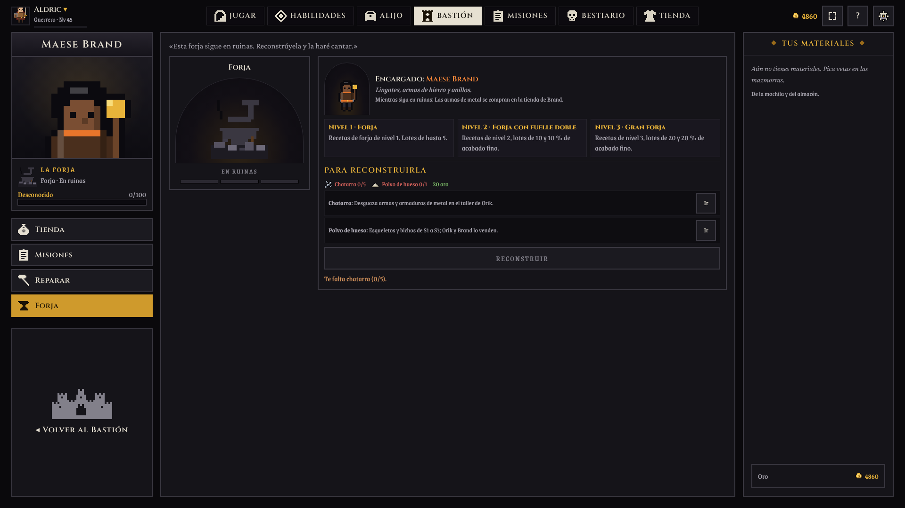
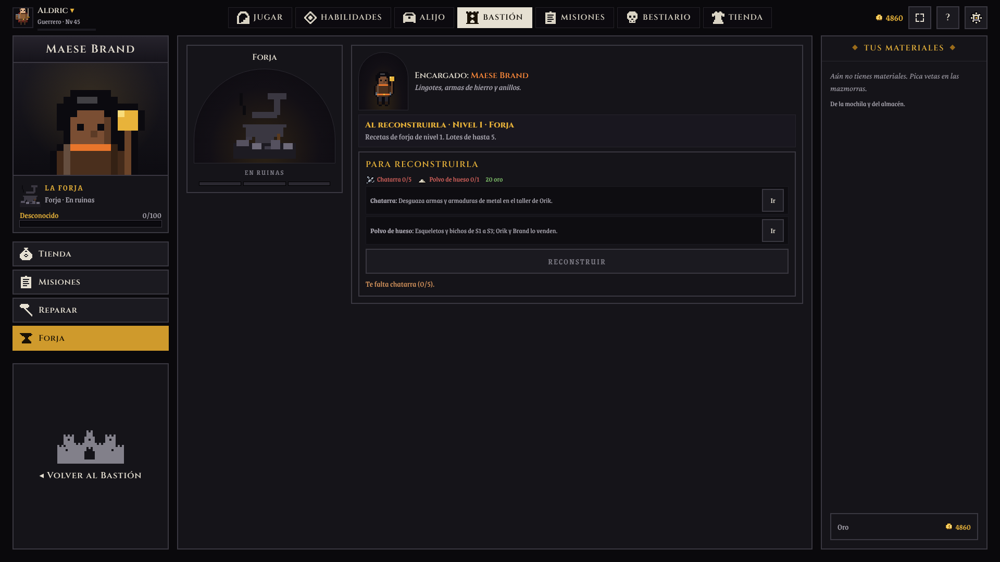
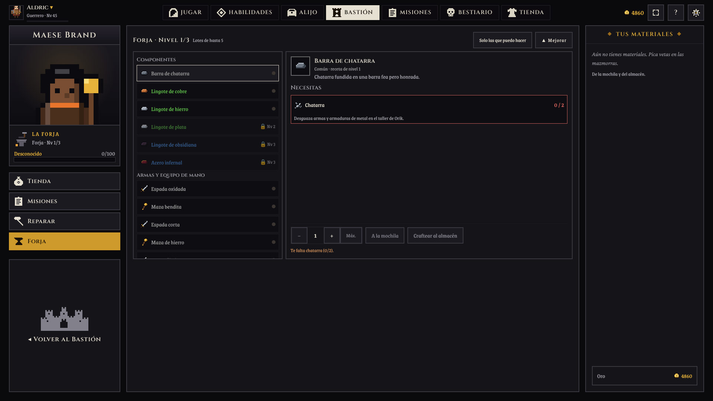
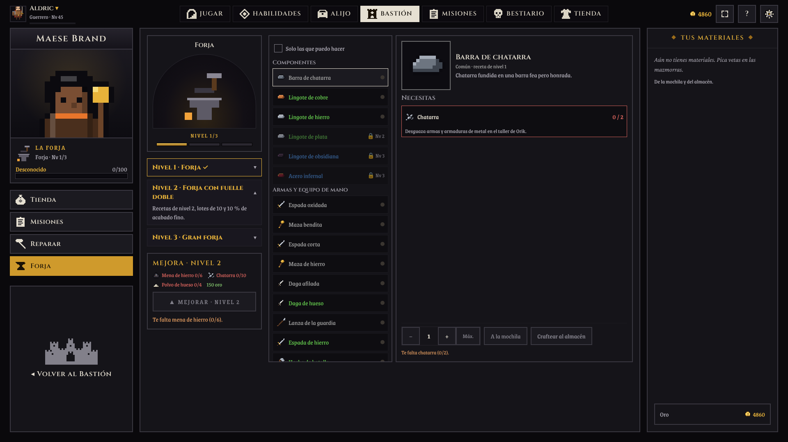
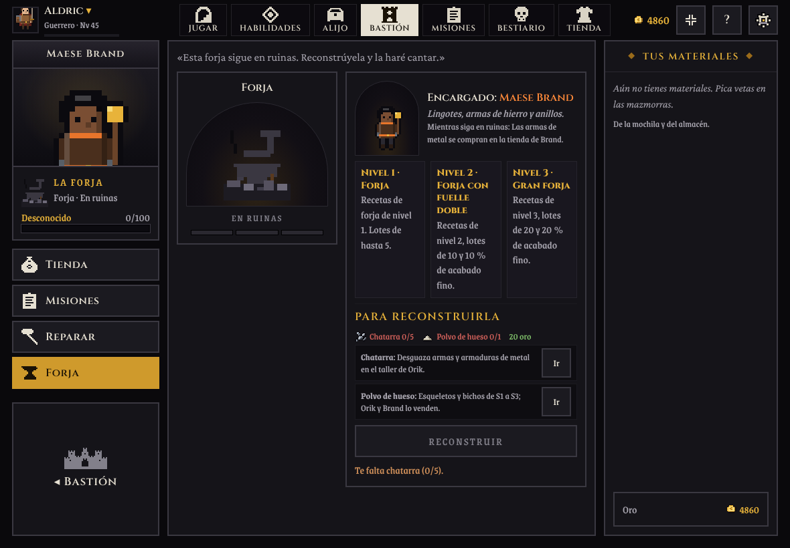
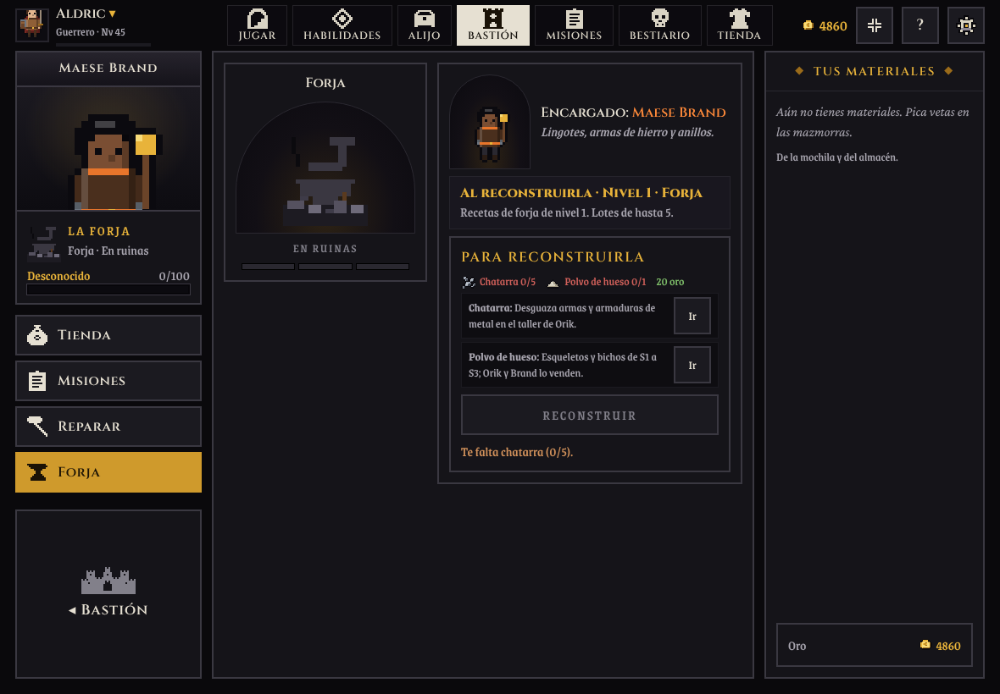
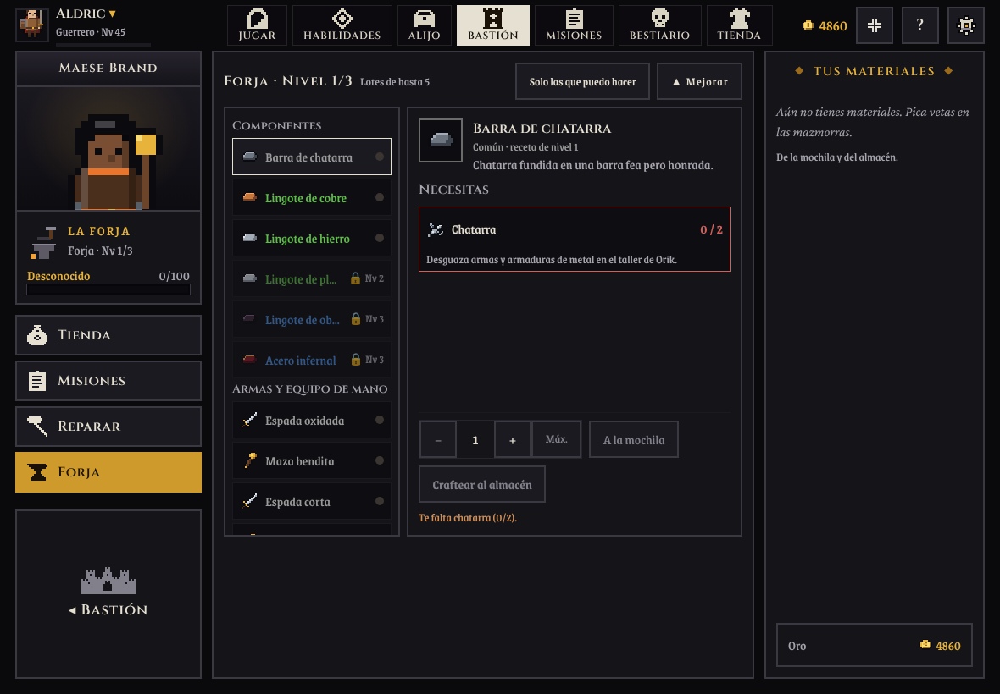
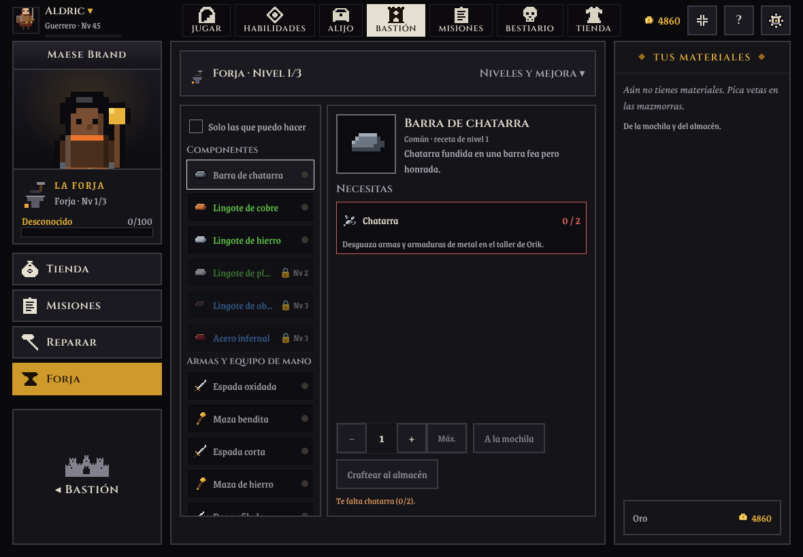
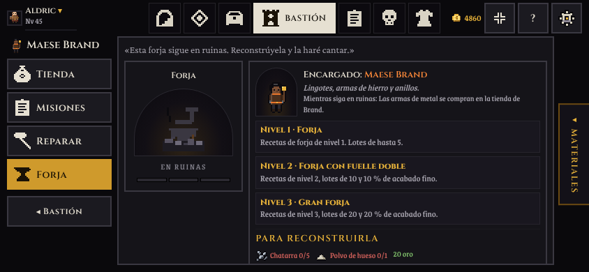
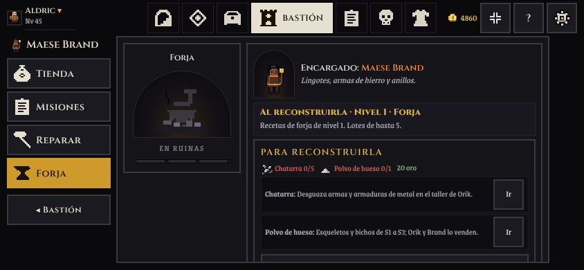
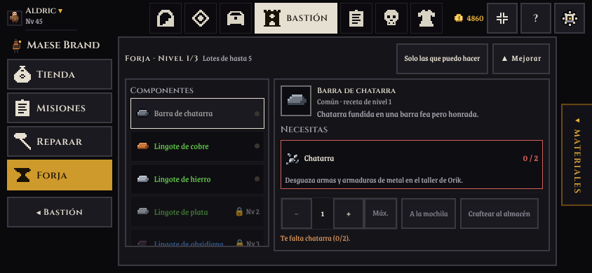
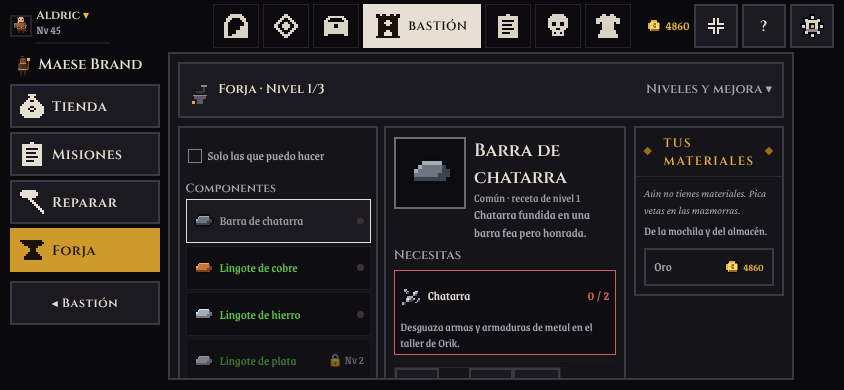